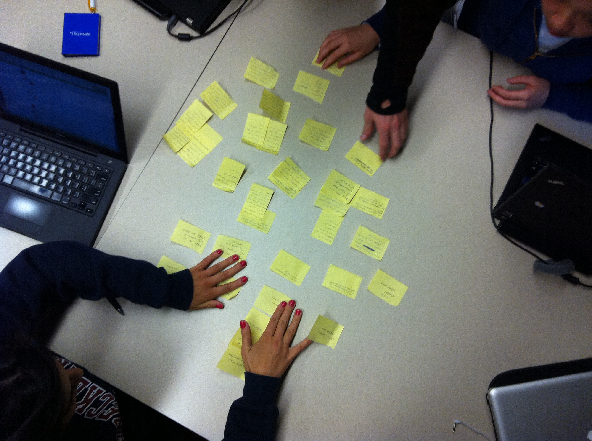
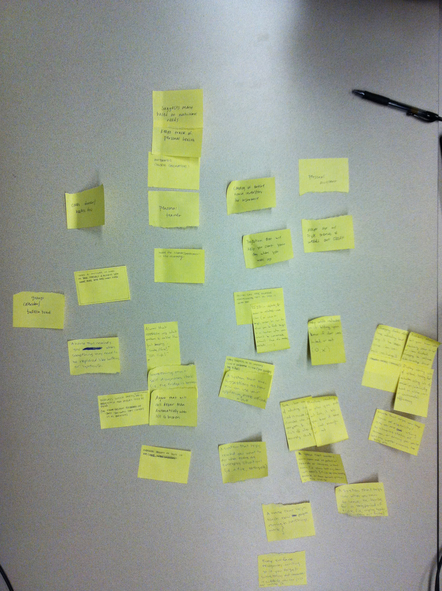

Recap of Research
01.Initial Research
Agents
Our initial agents included a Valet, Maid, and Maintenance agent for the home.
Initial Project Goal
Developing technology that can assist with boring but necessary tasks, while promoting self sufficiency and independence in the members of the family.
Problem Statements
Families have difficulties keeping track of specific items and their statuses.
Family members waste time on mundane tasks around the house, decreasing leisure and bonding time
Initial Assumptions
People have a lot of stuff (and kids make this problem more severe)
Family members spend a significant portion of their time at home
People value both individual and bonding time at home
Focus Statement
What tasks do family members frequently and sporadically find themselves doing, and what items and locations are associated with these tasks?
 Refined Agent Going Forward - Maintenance
Agent with knowledge of the living environment and knows what needs to be done to keep it working well
Initial Research Performed
Directed Storytelling
- Family members prefer certain rooms for specific tasks.
- Family members have certain household tasks they frequently perform.
- The home is viewed as a location for leisure and rest.